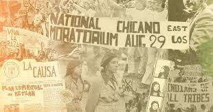

Approach and Methodology
Approach
The book is a crucial addition to Chicana feminist history, shining a light on women who often found themselves at crossroads of racial and gender struggles. The review evaluates Chicana Liberation by examining Chávez’s approach, her success in capturing women’s history, and her book’s contribution to the historiography of Mexican American political activism. Chávez employs a rich, intersectional approach that weaves together oral histories, archival sources, and feminist theory to reconstruct the experiences of Chicana activists. She does this by amplifying personal narratives and ensures that these women are often marginalized in traditional political histories.
Methodology
One of the most striking aspects of her approach is her commitment to intersectionality. Chávez explores how race, gender, and class shaped the activism of Chicanas, showing that their struggles were not just about racial justice but also about gender equality within their own communities. She does not shy away from addressing the tensions between Chicana feminists and their male counterparts in the Chicano movement, nor does she ignore the ways in which mainstream often overlooked or misunderstood the need of women of color. Chávez notes that “these global and local encuentros shaped the practice of Chicana feminism via the transnational exchange of ideas and experiences that helped Chicanas understand their struggle in the context of global struggles for justice and exposed the blond spots of U.S. feminism” (Chávez, 2024, p.94).